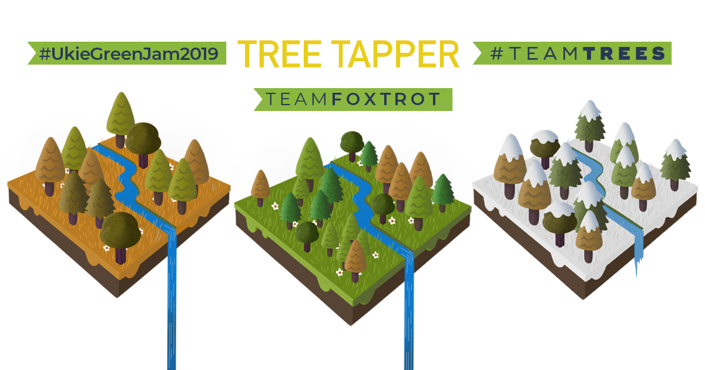

Tree Tapper is a game made for the Ukie Green Jam where the theme of the jam was Climate change and sustainability. We made this idle clicker with hope to support the #teamtrees campaign. #ukiegreenjam2019
Designer: Designed the core theme and gameplay mechanics for this project.
Social Manager: Managed the Twitter and Itch.io page for this project.
Click the image to be redirected to the Project Itch Page.
